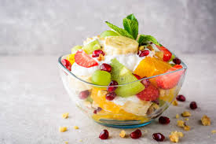
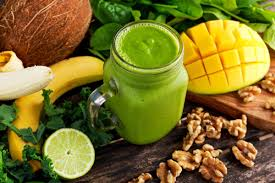
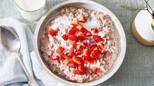

Capai berat badan ideal dengan cara yang sehat dan berkelanjutan

Campuran buah segar yang kaya akan vitamin dan serat.

Minuman sehat yang terbuat dari sayuran hijau dan buah-buahan.

Sarapan bergizi tinggi yang baik untuk kesehatan jantung.